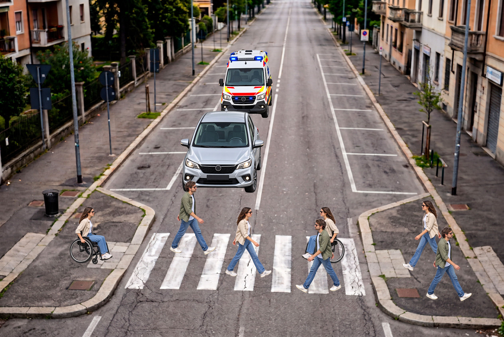

0
Completati in questa sessione MODALITÀ DEMO
CROSSSENSE CONTROL ROOM
Un attraversamento più intelligente.
Visione locale, controllo adattivo e protezione in tempo reale.
◈ Simulazione localeCamera e controller non collegati. Tutti i dati e le richieste sono simulati.
0
Sinistra 0 · Destra 0—
Richieste demo serviteLibero
Nessuna traccia sulle strisceVista dell’attraversamento
Schema animato · osservazioni simulate

FRAME DI ESEMPIO
Controller semaforico
Macchina a stati · simulata
Verde veicoli
Attraversamento pedonale in attesa
Tempo residuo18 s
Segnale pedonaleRosso
Protezione sgomberoInattiva
Calibrazione metricaNon disponibile
RICHIESTE AL CONTROLLER
Le richieste demo rispettano le transizioni del simulatore.
Flussi della sessione
Attraversamenti completati per direzione
Sinistra → destra0
Destra → sinistra0
Registro eventi
Transizioni e risposte alle richieste demo